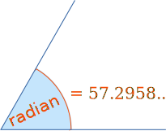
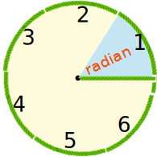

Radians
The angle made when the radius
is
wrapped round the circle:

|  | 1 Radian is about 57.2958 degrees. |
Why "57.2958..." degrees? We will see in a moment.
The Radian is a pure measure based on the Radius of the circle:
Radian: the angle made when we take the radius
and wrap it round the circle.
Radians and Degrees
Let us see why 1 Radian is equal to 57.2958... degrees:

In a half circle there are π radians, which is also 180°
To go from radians to degrees: multiply by 180, divide by π
To go from degrees to radians: multiply by π, divide by 180
Here is a table of equivalent values:
| Degrees | Radians (exact) |
Radians (approx) |
|---|---|---|
| 30° | π/6 | 0.524 |
| 45° | π/4 | 0.785 |
| 60° | π/3 | 1.047 |
| 90° | π/2 | 1.571 |
| 180° | π | 3.142 |
| 270° | 3π/2 | 4.712 |
| 360° | 2π | 6.283 |

Example: How Many Radians in a Full Circle?
Imagine you cut pieces of string exactly the length from the center to the circumference of a circle ...
... how many pieces do you need to go once around the circle?
Answer: 2π (or about 6.283 pieces of string).
Radians Preferred by Mathematicians
Because the radian is based on the pure idea of "the radius being laid along the circumference", it often gives simple and natural results when used in mathematics.
For example, look at the sine function for very small values:
| x (radians) | 1 | 0.1 | 0.01 | 0.001 |
|---|---|---|---|---|
| sin(x) | 0.8414710 | 0.0998334 | 0.0099998 | 0.0009999998 |
(as long as "x" is in Radians!)
There will be other examples like that as you learn more about mathematics.
Conclusion
So, degrees are easier to use in everyday work, but radians are much better for mathematics.